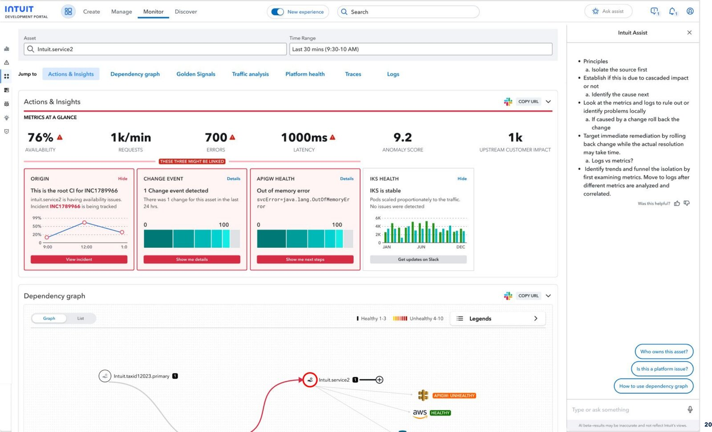
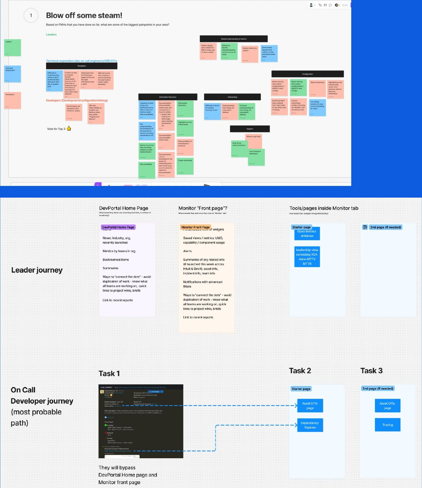
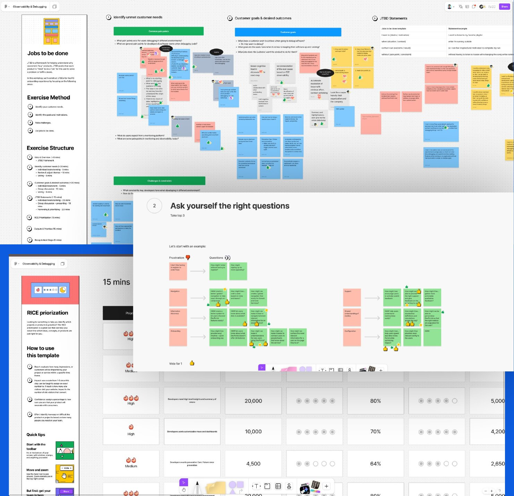
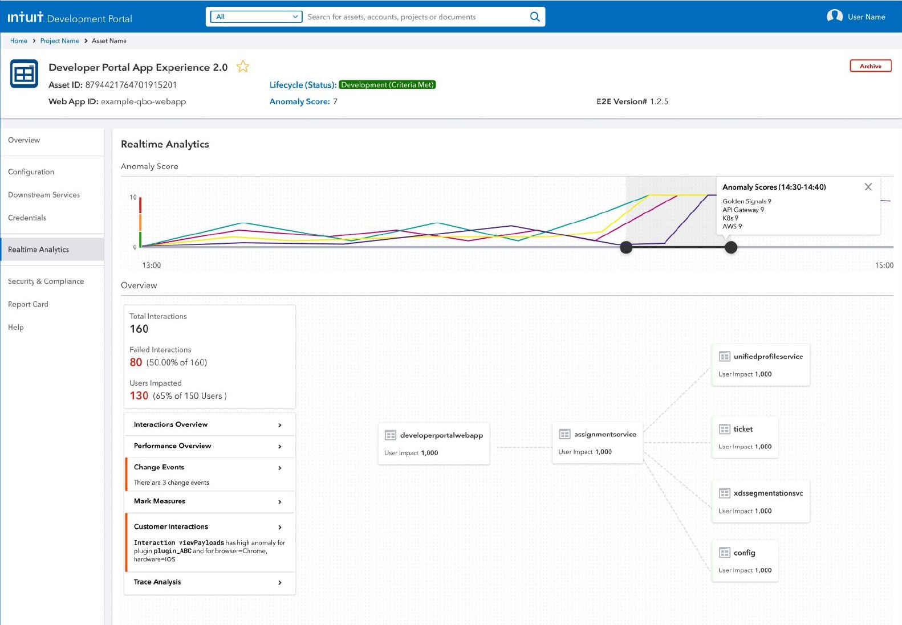
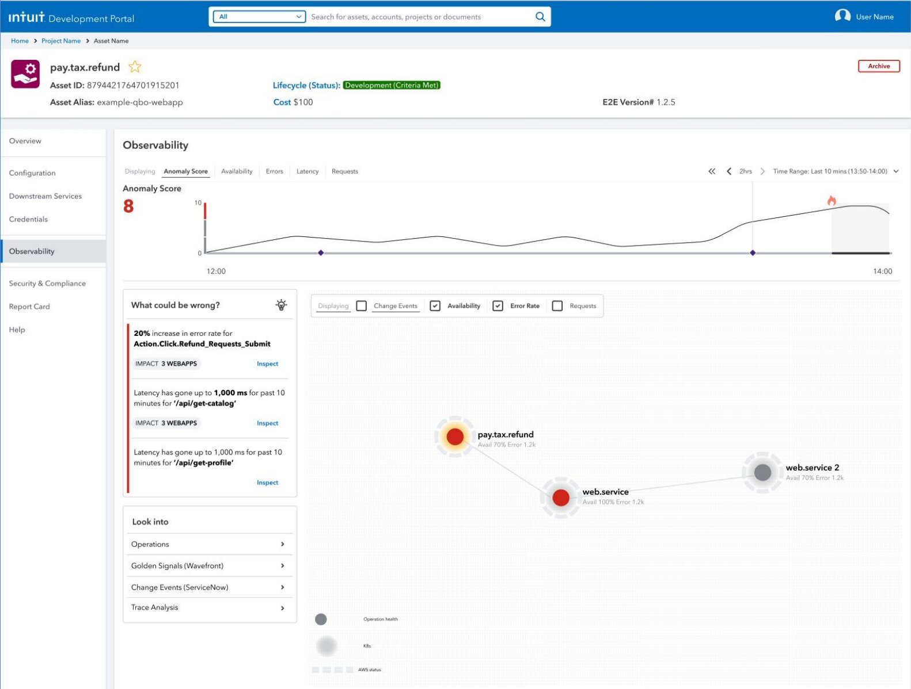
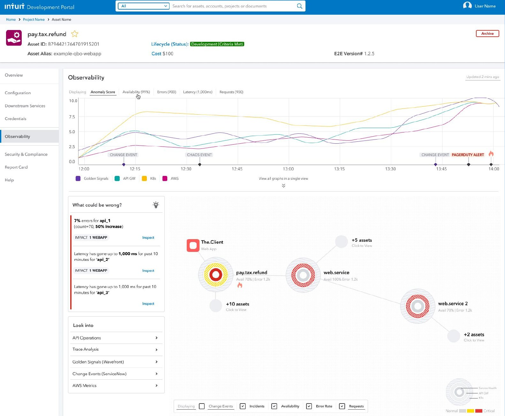
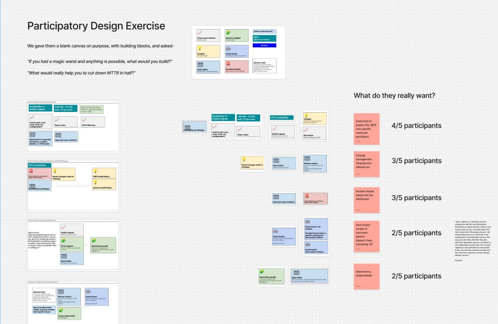
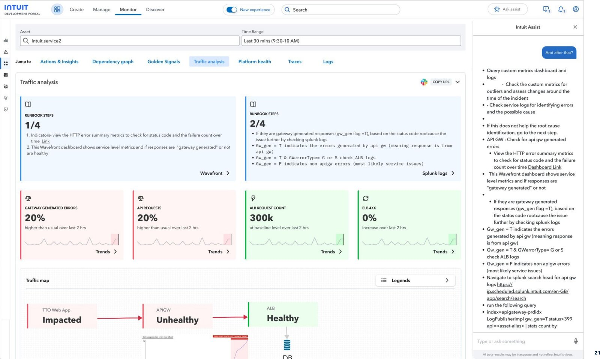

AI-Native Observability
Designing an in-house observability tool, native to Intuit's own infrastructure, to replace a third-party vendor tool costing $1.6M a year — and to get every Intuit app closer to 99.9% uptime.

The goal was to create observability tools for debugging incidents — tools that could bring 99+% uptime to TurboTax, QuickBooks Online, and every other Intuit app, and cut mean-time-to-detect, identify, and repair by 20% or more. The forcing function behind all of it: decommissioning AppDynamics, a state-of-the-art external tool that was costing Intuit over $1.6M a year in licensing.
Primary users were Intuit developers who were "on-call"; secondary users were the Intuit Operations Center, the VP of Engineering, and site reliability engineers. As the first and only design lead for Operations, this was mine end-to-end — a product manager, a director of PM, and 20+ developers as stakeholders, but almost no Design for Delight culture to lean on, no dedicated researcher or visual designer, and a short runway to launch.
The process followed Intuit's own Design for Delight triple-diamond: discover the problem, explore the solution, deliver the experience. It started with Follow Me Homes — sitting with developers to watch how they actually debugged incidents — which surfaced their real pain points and the specific data they wanted to see. Next steps were about getting stakeholders aligned on a shared vision by putting those insights in front of them and brainstorming solutions together.
From there, JTBD, How-Might-We, and RICE prioritization workshops aligned product, design, and engineering behind a single vision: a single pane of glass that takes a developer from incident alert straight through to debugging.


Concept 1, Realtime Analytics, leaned almost entirely on an anomaly-score trendline. Both leadership and users pushed back — a single trendline wasn't enough signal to understand what was actually happening in the system, and people needed links out to other dashboards for more context.
Concept 2, Observability 1.0, answered that by adding more platform health data. The feedback loop kept going: Concept 3, Observability 2.0, pushed further and layered in more insight directly into the dashboard, so developers didn't have to go hunting for context that should have been sitting right in front of them.



To pressure-test the direction, I ran a participatory design exercise — handed developers a blank canvas and a set of building blocks and asked two questions: "If you had a magic wand and anything is possible, what would you build?" and "What would really help you cut down MTTR in half?"
4 of 5 participants wanted something highly specific to their own workflow rather than a generic view; 3 of 5 wanted change-management context surfaced alongside the alert; 3 of 5 wanted incident details built into the dashboard itself, not a click away. That's what shaped the final concept.

The final concept added high-level actions and insights, backed by a chat assistant, so a developer could triage an issue in seconds instead of digging across six tabs by hand — ask "who owns this asset," "is this a platform issue," or "how do I use the dependency graph," and get an answer inline instead of pinging someone.
Concept testing validated the Actions & Insights panel and the runbook steps strongly — developers responded well to both. The dependency graph and golden signals read more mixed, so those kept iterating past this round.

"From 'Hey, can I get that UI by EOW?' to 'What's our vision?' — that shift in how stakeholders saw the role defined this project as much as any single screen did."
Beyond the headline uptime and cost numbers, mean-time-to-repair improved 20% for SBSEG, and adoption of the Observability page grew 80%. The work went on to win two internal honors — a DevX Excellence Award and a special recognition.
There was almost no Design for Delight culture in Operations when this started — it had been run like a startup. I built it by running Follow Me Homes, showing customer data, introducing the product process, running workshops, and having a lot of buy-in conversations, until "strong D4D culture" was actually true instead of aspirational.
Quarterly deliverable timelines didn't originally leave room for user research, so early on I squeezed research into whatever time I had. Once stakeholders saw what it surfaced, they started giving it real breathing room — to the point a PM manager later asked, unprompted, "did you do FMHs on this already? We need to test it before we build it." Getting FMH participants was its own challenge given how packed developers' schedules were; building direct relationships with teams like QBO, SBSEG-CX3, IDX, and ID360 — plus some friendly persistence on Slack — made it far easier going forward, and gave product and design a direct line to customer feedback.